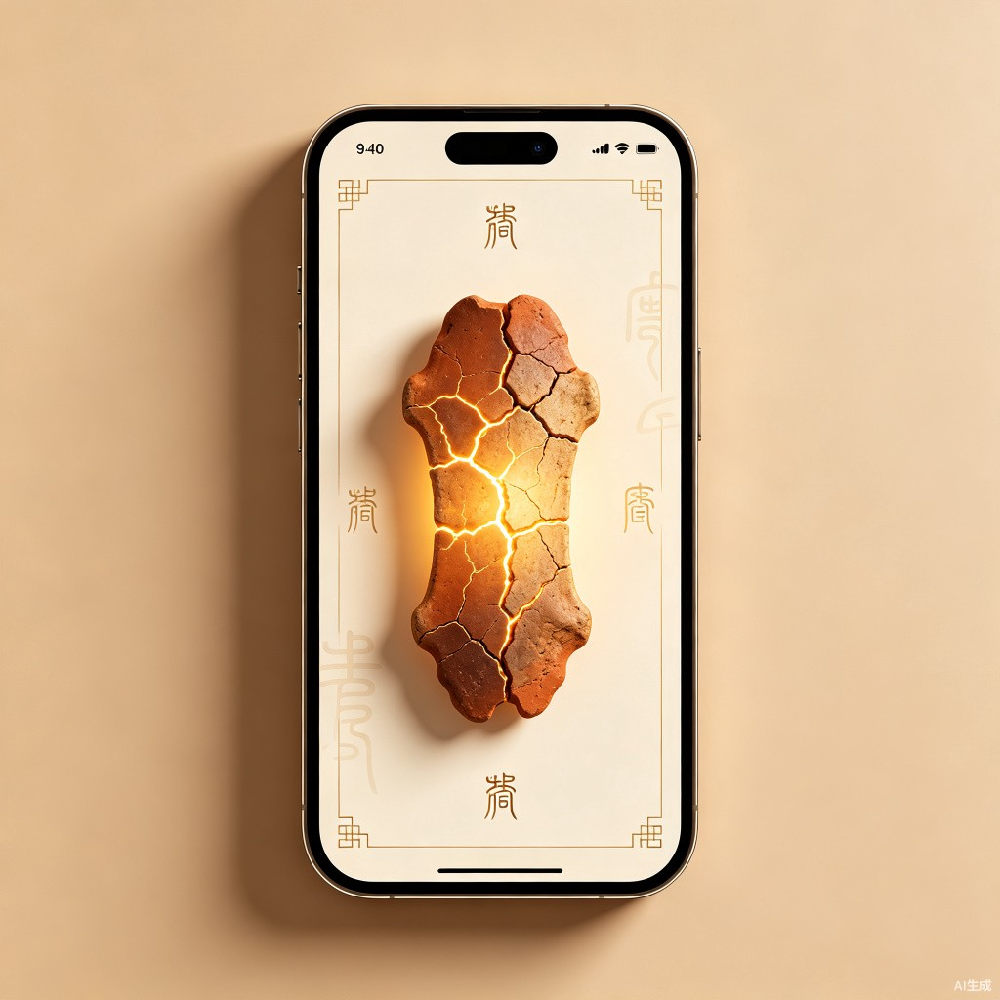

AI古法甲骨占卜复刻
以商代甲骨占卜的真实仪式为灵感，结合现代AI技术，为当代年轻人打造一款兼具文化底蕴与心理疗愈价值的移动端H5产品。
现有的线上占卜/心理慰藉产品（如西方塔罗、网页抽签）普遍存在互动流于表面、缺乏仪式感、同质化严重的问题。同时，作为中华文化源头的甲骨文及占卜文化长期躺在博物馆和学术论文里，由于门槛过高，缺乏与现代年轻人情感产生共鸣的数字化载体。
灵感源于复刻历史真实甲骨占卜过程。根据考古学家整理，目前甲骨卜辞所包含的主题涉及夏商时期生活的方方面面，例如：田猎、生育、战争等。这与当今年轻人对于塔罗牌、赛博算命的热衷和心理相契合。同时，甲骨占卜的过程兼具趣味性和高交互性，提供给年轻人一个获取情绪价值的途径。
一款高交互性的移动端H5网页。通过动态视觉特效，在线上复刻商代甲骨占卜的工作流（前辞-命辞-占辞-验辞），并由后台AI扮演"商代贞人"为用户提供定制化的情感陪伴。同时包含日历归档和回访验证，为用户提供可查询历史记录的功能。

18-35岁年轻人群体，面临学业、职场、情感等重大抉择时产生高频焦虑。
数字化正念解压爱好者，如电子木鱼、MBTI、星座塔罗等内容的忠实受众。
对国潮、考古学及传统文化感兴趣，渴望以现代方式接触古老文化的青年群体。
面对"今天是否要表白"、"要不要换赛道"等悬而未决的困惑，需要一个充满仪式感的外力来提供心理锚点。
打开产品，通过长按屏幕、聆听骨裂声、观看独一无二的裂纹蔓延，将其作为一种视觉和听觉上的高阶心理疗愈。
产品严格遵循商代占卜的"前辞-命辞-占辞-验辞"历史逻辑，并创造性地将"日历归档"转化为记录生活走向的"验辞本"。用AI技术跨越数千年的文化鸿沟，让远离大众日常视野的汉字古文字和千年以前的甲骨占卜文化重新活跃在年轻人的生活中，实现了传统文化的破圈传播。
产品不搞封建迷信，而是利用独一无二的甲骨裂纹（卜兆）结合AI的哲理性释读，为用户提供"点到为止"的心理疏导。这种文化壁垒和极简美学价值的交互，切中了当今年轻态"精神消费"与"解压经济"的市场，具备一定的用户黏性和社交潜力。
长按屏幕模拟灼烧过程，实时生成独一无二的裂纹图案（卜兆），配合骨裂声效与粒子特效。
后台AI扮演"商代贞人"角色，根据裂纹走向与用户背景，给出定制化、哲理性的吉凶释读。
以日历形式归档每次占卜记录，支持添加"验辞"（后续反馈），形成个人化的生活决策档案。
用户可与AI贞人自由对话，咨询更多关于占卜结果的理解，或了解甲骨文文化知识。
用户输入背景与所问之事，系统记录时间、地点、事项
AI贞人确认问题，用户进入灼烧仪式准备界面
灼烧生成裂纹，AI根据裂纹形态释读吉凶并给出哲理建议
用户后续可回填结果，AI归档至日历，完成闭环
flowchart TD
A[用户进入小程序] --> B{选择模式}
B -->|今日一卜| C[输入所问之事]
B -->|验辞日历| D[查看历史记录]
B -->|贞人对话| E[与AI自由交流]
C --> F[AI贞人确认命辞]
F --> G[长按屏幕灼烧甲骨]
G --> H[裂纹动态生成]
H --> I[骨裂声效+粒子特效]
I --> J[AI释读吉凶]
J --> K[获得定制化哲理建议]
K --> L[分享/保存卜兆图]
K --> M[添加至验辞日历]
M --> N[后续回填验辞]
D --> O[按日期查看历史]
E --> P[咨询文化知识]
E --> Q[深入理解结果]
style A fill:#C17817,color:#fff
style G fill:#C17817,color:#fff
style J fill:#C17817,color:#fff
style K fill:#D4A843,color:#1A120B
用户需长按屏幕3-5秒，期间看到火焰从底部升起，甲骨逐渐变红，最终"啪"的一声出现裂纹。裂纹走向完全随机，确保每次体验独一无二。
灼烧阶段：木柴燃烧的噼啪声；裂纹生成：清脆的骨裂声；结果揭晓：青铜编钟的低鸣。三层声效营造沉浸式仪式感。
| 维度 | 西方塔罗App | 电子木鱼/抽签 | 早贞晚卜（本产品） |
|---|---|---|---|
| 文化深度 | 西方神秘学，文化隔阂 | 浅层符号，无文化叙事 | 中华源头文化，有历史厚重感 |
| 交互仪式 | 抽牌翻牌，较简单 | 点击即得，无过程 | 完整灼烧仪式，高沉浸感 |
| 结果唯一性 | 固定牌库，可重复 | 固定结果，随机性伪 | 裂纹完全随机，真正独一无二 |
| AI陪伴 | 部分有，但较机械 | 无 | 贞人角色扮演，深度对话 |
| 历史归档 | 简单记录 | 无 | 验辞日历，闭环验证 |
| 社交属性 | 较强 | 弱 | 卜兆图分享，独特视觉 |
解锁更多风格的AI贞人角色（如儒雅型、严厉型、风趣型），以及更深度的对话与解读服务。
将生成的裂纹图案制作成高清壁纸、社交分享图，或实体周边（如书签、明信片）。
甲骨文知识课程、商代历史文化专题、考古学家讲座等深度文化内容。
与博物馆、文创品牌、新中式茶饮等联名，推出限定版甲骨主题皮肤或线下活动。
据相关数据显示，中国"解压经济"市场规模已突破千亿，其中数字化心理健康与疗愈类应用增长迅速。与此同时，"国潮"与"新中式"消费趋势在Z世代中持续升温，具备文化壁垒的产品更容易形成差异化竞争优势。
「早贞晚卜」的独特定位——将非遗文化+AI技术+心理疗愈三者融合，在当前市场中几乎没有直接竞品，具备先发优势和高用户黏性潜力。
「早贞晚卜」不仅是一款产品，更是一座连接古今的桥梁。
我们让沉睡千年的甲骨文在火焰与裂纹中重新呼吸，
让年轻人在每一次灼烧的仪式感中，找到面对选择的勇气。
"天命靡常，惟德是辅。裂纹无常，唯心可解。"